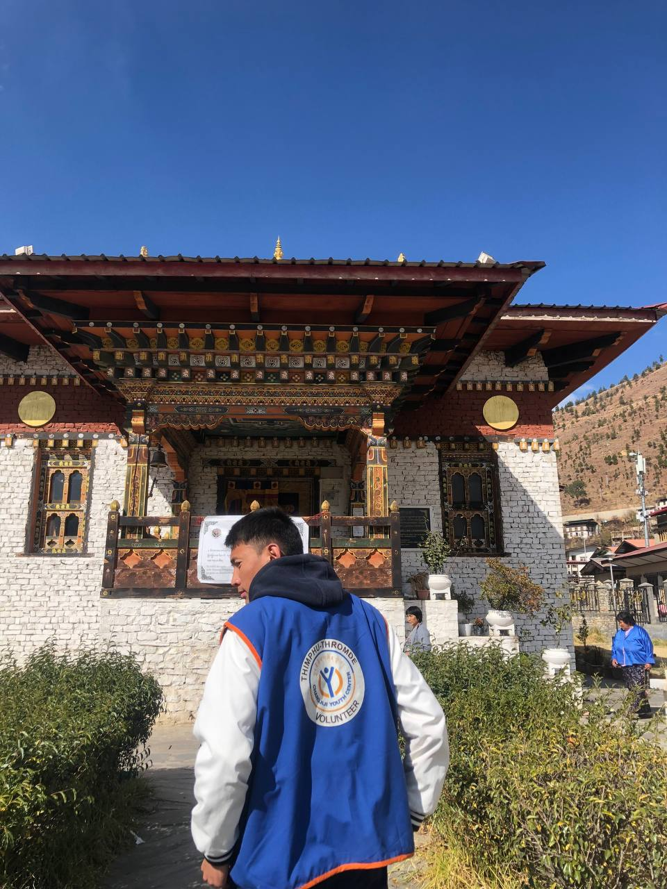

Voluntary Works

- During my time at the Changjiji Youth Center, I had the incredible opportunity to immerse myself in the community and make a meaningful impact. The center serves as a safe haven for local youth, providing various programs aimed at fostering personal growth and development.
- As a volunteer, I engaged in several activities tailored to the needs of the young people at the center. I helped organize workshops focused on life skills, such as resume writing, interview preparation, and financial literacy. It was rewarding to see participants gain confidence as they learned to present themselves effectively and plan for their futures.
- In addition to my work at Changjiji, I was actively involved in the AFHs (After- School Homework Support) program. This initiative aimed to provide academic assistance to students struggling with their studies. I facilitated group study sessions and one-on-one tutoring, helping students tackle challenging subjects and complete their homework. The joy on their faces when they grasped a difficult concept was truly priceless and motivated me to keep supporting them.
- Moreover, I participated in Winter Engagement Programs, where we organized seasonal activities to keep the youth active and engaged during the colder months. These programs included arts and crafts, sports, and community service projects. I led a group of volunteers in creating a winter carnival, which featured games, food, and entertainment. It was heartwarming to see the kids come together, share laughs, and enjoy the festivities, creating lasting memories.
- Volunteering at Changjiji Youth Center and participating in these programs taught me the importance of community, empathy, and resilience. I came away not only with new skills and experiences but also with a deeper understanding of the challenges faced by the youth in our community. Overall, this experience solidified my commitment to giving back and supporting those in need.